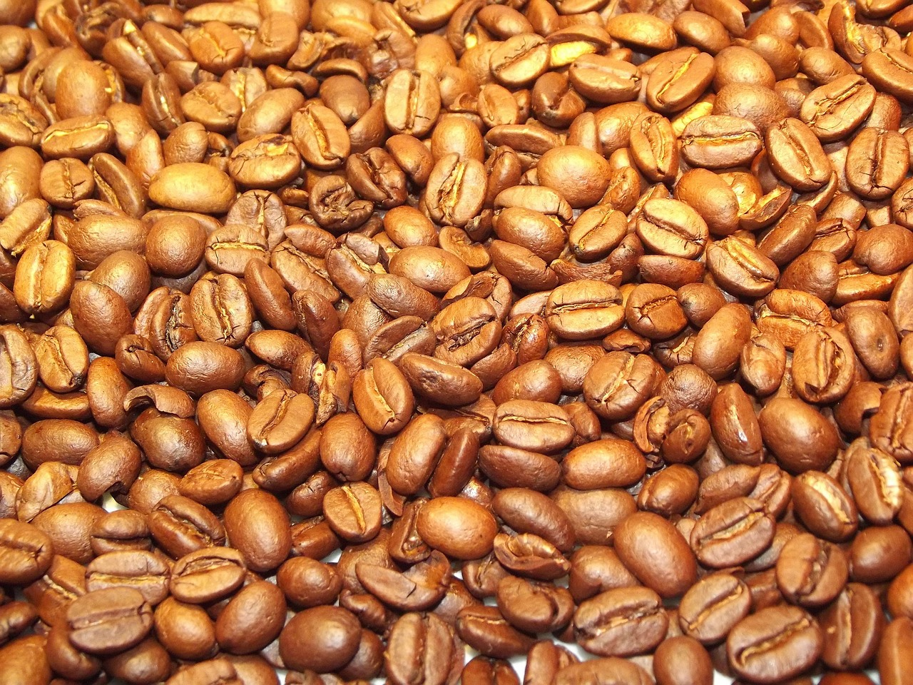
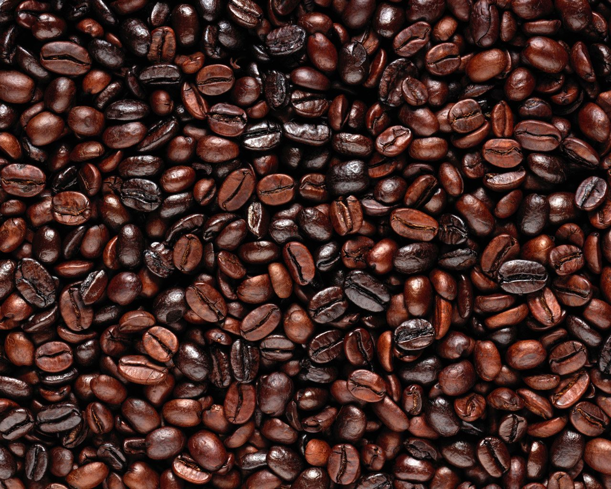

TOSTADO DEL CAFÉ
El tostado de café es un proceso clave que convierte los granos verdes en aquellos que finalmente se muelen para preparar la bebida. Durante este proceso, el calor transforma las propiedades químicas y físicas del grano, liberando los aceites y compuestos responsables del aroma y sabor. Según el tiempo y temperatura del tostado, se obtienen distintos perfiles de sabor, desde notas más ácidas y frutales en tostados claros, hasta sabores más intensos y amargos en tostados oscuros. Este proceso requiere precisión para equilibrar las características únicas de cada variedad y resaltar su mejor expresión en taza.


